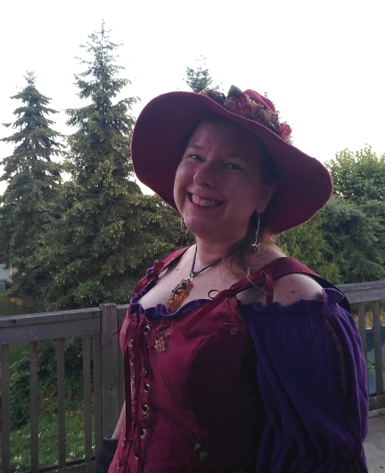

About Me:
I have lived in several locales in my life, including having been a Zonian when I was a young child. I currently live in the southeastern farmland of the Puget Sound Area of Washington state (Pierce County).
Education
- Unordered list is here
- Unordered list is here
- Unordered list is here
- Unordered list is here
- Unordered list is here
- Unordered list is here
- Unordered list is here
- Unordered list is here
- Unordered list is here
I received my bachelor's degree in Wildlife (within the College of Natural Resources), which basically prepares graduates to work outdoors in the field doing things like radio-tracking wild animals or monitoring the impacts of logging on Forest Service land. During school, I had already been volunteering to rehabilitate injured birds of prey at a center attached to my university's veterinary hospital. Since most raptor centers hold permits to use permanently disabled birds for educational purposes, that student experience quickly led after graduation to paying jobs educating the public about raptors, and then extrapolated over to educating about various other wild animals who had been trained to be handled. So I pivoted very quickly after college graduation into husbandry care of animals in the education departments at zoological facilities. In the final years of that career, a priceless opportunity to learn animal training techniques with marine mammals led me down an even more specialized path, which was training education animals for educational zoo stage shows. During my career with wildlife, I cared for and trained a huge variety of different species (everything from insects to domesticated animals) but the ones I gained the most experience with were marine mammals and birds of prey.
Five and a half years ago, life forced me to find a temporary job of driving city buses, which became something more permanent. I worked evenings, but it was nice for the first time in my life to finally have a Monday to Friday job with major holidays off. During the height of the pandemic, there was no change at all in my daily work routine except for none of the middle class commuters riding the bus anymore, more violence at work, and a dramatically sharp increase in passengers abusing opiods.
Goals
q
w
e
r
t
y
u
i
o
p
After five and half years of driving buses, I would like to begin a career in software development. Several years of my life have been spent commuting 2 hours a day between work and home. Because of working in a different county (and, in some cases, a different state) than where I have slept, I also haven't had proper opportunity to get to know my neighbors. So it would be enjoyable to have a job that I can perform from home, even if only part of the week. Additionally, it would be enjoyable to be able to participate in social hobbies, which almost always take place for adults after 5pm midweek due to most adults working from 9 to 5. I have always had an interest in coding and have greatly enjoyed all of the experiences I've had so far with it. I look forward to everything I will learn from CodeFellows!
Top 10
- q
- w
- e
- r
- t
- y
- u
- i
- o
- p